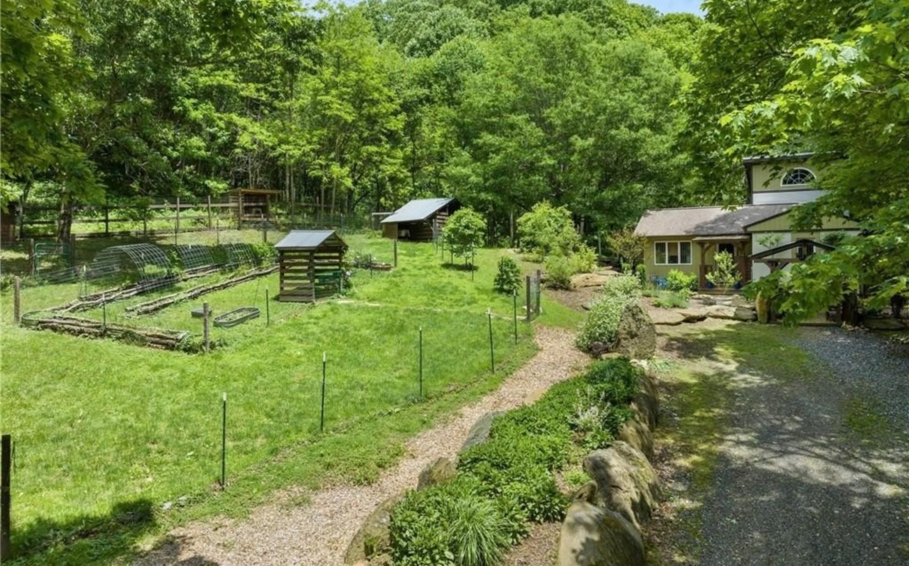
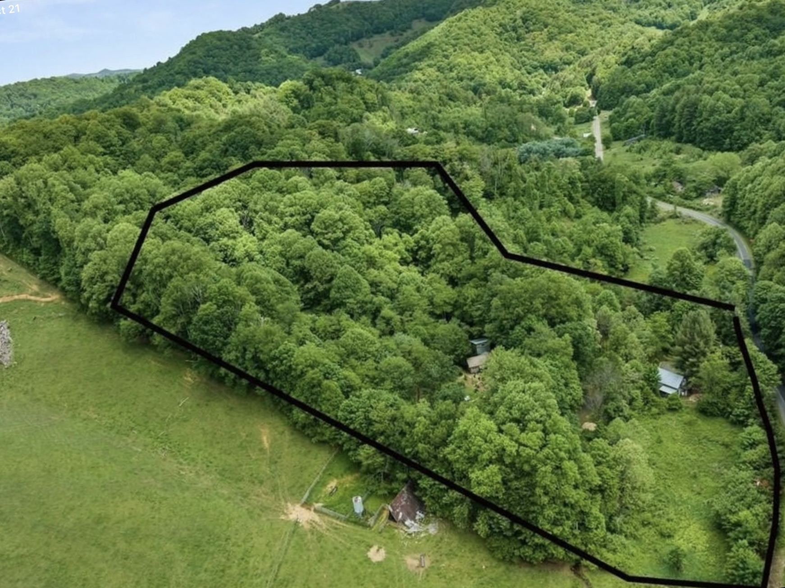
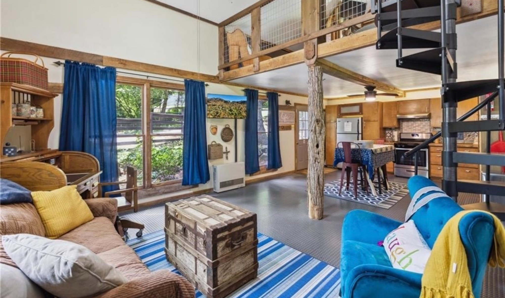
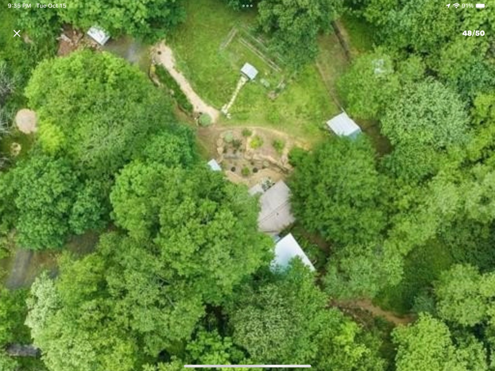
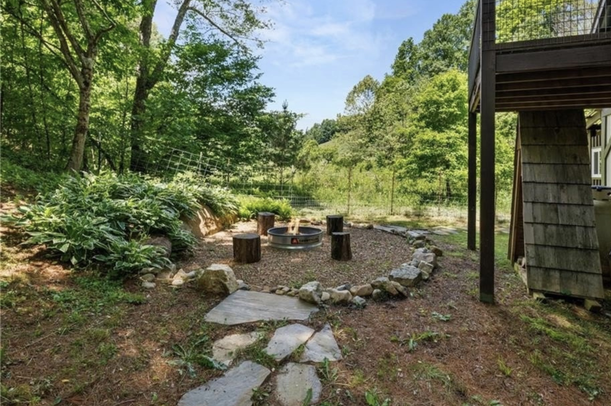

A sanctuary for nature immersion, spiritual practice, and sacred return
Nine and a half acres in the Blue Ridge Mountains. A creek that runs year-round. Skies so clear the stars feel close enough to name. A cottage that has welcomed travelers from across the country — and left them wanting to come back.
Seven Feathers is already a place of rest and restoration. And it is becoming something more: a full wellness sanctuary, being built with intention, one phase at a time — for healing, for community, for the kind of connection that people are increasingly hungry for and increasingly hard to find.
We are actively seeking kindred investors and partners — people who see the vision, believe in the land, and want to be part of building something that lasts. If that's you, you are in the right place. Welcome to the journey.
This is not just an investment opportunity. It is an invitation to help build something that will outlast us — a sanctuary rooted in seven generations of thinking, and open to everyone who needs it.
These are not aspirational ideals posted on a wall. They are living principles that shape every decision — how we welcome guests, how we steward this land, how we hold space for healing.
Whether you come as a spiritual seeker, someone seeking rest in the mountains, or someone carrying grief you haven't yet named — you will be met with the same respect. We honor all traditions, all boundaries, all ways of being.
Healing is not a transaction. We enter into relationships — with guests, partners, and the land itself — with mutual care and mutual benefit. We support local businesses, build fair partnerships, and tend the land that gives to us.
The Seven Generations principle, rooted in Indigenous wisdom, asks us to consider how our choices today will affect the people and land seven generations from now. At Seven Feathers, we build and steward with that horizon in view.
We do not heal in isolation. Seven Feathers exists within a community and takes that membership seriously — through sliding-scale pricing, local partnerships, and gatherings open to everyone.
You belong if you come with your dog, your grief, your curiosity, or your joy. You belong if you're new to this kind of space or if you've been seeking for years. Belonging is not something you earn — it is your birthright.
Seven Feathers was founded by someone who spent over a decade working with survivors of violence. That experience shapes everything here — trauma-informed care in every interaction, consent at the center of all healing work.
Dignity is the bedrock beneath all the other feathers. You are worthy, exactly as you are. Every person, every animal, every piece of this land deserves to be treated with dignity. We price our offerings to be accessible, not exclusive, and operate with full transparency.
The Storybook Cottage is actively listed on Airbnb with a 4.97-star rating and consistent bookings year-round. These photos show the land and cottage as they exist today.





4.97 out of 5 stars on Airbnb · Verified guest reviews
"Amy's place was great and just what my husband and I (and dog Jasper) needed for getting out of town. The cabin is cozy and adorable and truly perfect for pet owners. Having that fenced in yard all around the house made it so much easier to bring our pup along. They gave us great recommendations for things to do outside, restaurants, and locally owned shopping nearby."
"When we got snowed in we received eggs from the onsite host Amy, who was amazing and very helpful. The views as well as location is a dream come true! It's hosts like these that give Airbnb a great name!!"
"Great place to stay. So cute and accurately described. Amy was so friendly and my daughter enjoyed a Reiki session with her."
"What a gem! The only thing you hear while sitting on the deck is birdsong, a babbling brook and an occasional moo from the neighboring cows. Highly recommend!"
"The cabin was truly relaxing, nestled perfectly in the trees by a creek. Waking up to the sound of birds and the creek, breathing in the fresh air, and disconnecting from the rush of everyday life was such a gift."
"Everything was as described — definitely bigger than the pictures make it seem, which is a wonderful surprise. The on-site hosts were so attentive and accommodating."
"The perfect spot to relax, unwind and connect with nature. I loved the high ceilings — it's like going camping without sacrificing the comfort of home. I will absolutely go again."
"This place is so adorable, private and cozy! My dogs were so comfortable and really appreciated being welcomed and having such a large fenced in space. We will definitely be back!"
"Very peaceful, relaxing, and remote area. Exactly as described."
"Had an amazing time with amazing hosts!!!! Would 100% recommend."
The phased expansion covers the first four years. But the vision extends well beyond — toward a retreat deeply rooted in its community, accessible to all who need healing, and alive with the rhythms of the land.
Healing should not be a luxury. We plan to establish a scholarship fund making wellness experiences accessible to those who need them most.
Seven Feathers is rooted in its community, and its success should benefit the people around it — local farms, artisans, and regional wellness practitioners.
The garden becomes a living part of the retreat experience. Guests leave not just rested, but with knowledge and seeds they can take home.
Animals are already part of life at Seven Feathers. The long-term vision expands that presence thoughtfully — with alpacas and animal-assisted wellness experiences.
Everything in this long-term vision serves the same purpose: deepening the retreat experience, strengthening the local community, and making healing more accessible.
The retreat's ultimate measure of success is not just revenue — it's the number of people who leave this land feeling more whole than when they arrived.
Everything you might want to know about Seven Feathers — the property, the programming, and how it all works.
This page contains detailed information about investment and partnership opportunities at Seven Feathers. We share it personally with people who have expressed genuine interest in walking this path with us.
To receive access, please reach out and introduce yourself.
Seven Feathers is looking for partners who see what this land can become — and want to help it get there.
Lansing, NC · Ashe County · Blue Ridge Mountains
An existing, income-producing property with a 4.97-star Airbnb rating, ready for phased expansion into a multi-revenue wellness destination.
Seven Feathers is not a speculative venture. It is an existing, operating short-term rental with a proven track record, a deeply invested owner-operator on-site, and a clear, phased plan to grow into a multi-revenue wellness sanctuary.
Each phase generates revenue before the next requires significant capital — limiting the amount at risk at any one time.
The global wellness tourism market was valued at approximately $950 billion in 2024 and is projected to reach $1.7–2.0 trillion by 2030.
Estimates based on current rental performance, comparable small-scale retreat operations, and conservative occupancy assumptions. Updated quarterly as real data becomes available.
| Revenue Stream | Year 1 | Year 2 | Year 3 |
|---|---|---|---|
| Cottage Rentals | $25K–$30K | $40K–$50K | $50K–$60K |
| Reiki & Healing | $8K–$12K | $12K–$18K | $15K–$22K |
| Day Experiences | $5K–$8K | $8K–$12K | $12K–$15K |
| Retreat Programs | $15K–$20K | $30K–$43K | $45K–$60K |
| Zome Rentals | — | $27K–$36K | $54K–$72K |
| Events & Community | $2K–$4K | $5K–$8K | $10K–$15K |
| Total | $55K–$74K | $122K–$167K | $186K–$244K |
There is no single right way to partner with Seven Feathers. The best agreements are built around what each person brings and what they need in return.
An equity partner holds an ownership percentage in the retreat business — sharing in both the upside as revenues grow and the long-term value of what we're building together.
A revenue-share partner receives an agreed percentage of gross or net revenue over a defined period — a direct stake in performance without full ownership complexity.
A straightforward loan structure with agreed interest and a repayment timeline — offering predictability for investors who prefer defined returns over equity participation.
Skills, networks, labor, materials, and expertise can all contribute meaningfully — and we are open to creative arrangements that honor those contributions.
There is no substitute for a real conversation. Reach out and tell us a little about yourself — what draws you to this vision, what questions you have, and what kind of partnership you might be imagining.
Call or text welcome · Email preferred for initial introductions